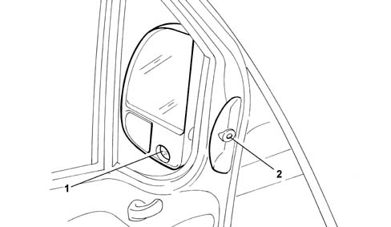
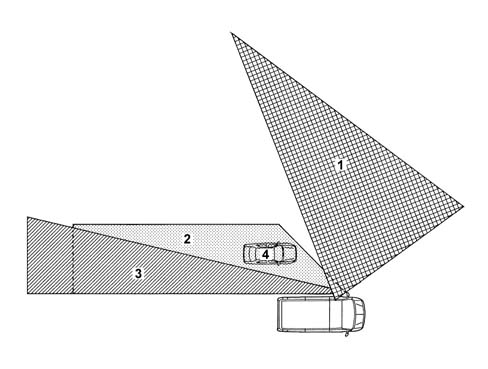
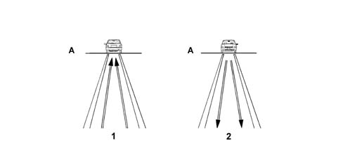
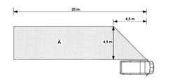

OVERTAKING SENSOR
- Path
- Descriptions > 55 ELECTRICAL EQUIPMENT > OVERTAKING SENSOR
- Kind
- system description
- Applies to
- all engines; all production periods
- Interactive page
- https://sloeber94.github.io/elrnDB-fDct/en/#/244000435
Applies to: all engines; all production periods
SPECIFICATIONS
he overtaking sensor is a device located inside the driver's door mirror. This surveys the blind spot on the driver's side to help ensure safer overtaking manoeuvres.
he device monitors the area at the side of the vehicle and notifies the driver of the presence of overtaking vehicles. In particular, the device is able to indicate approaching vehicles in the lane alongside the lane in which the vehicle on which the device is installed is driving. The vehicle fitted with the sensor can detect vehicles up to 20 m away. Notification is by means of a lighted signal that turns into a sound signal when the turn signal is on (left turn signal for left-hand drive vehicles, right for right-hand drive cars).
Notification begins when the approaching vehicle is still visible in the door mirror. The TV camera used as an active sensor includes a darkened area that delimits the image acquisition field to reduce possible glare.
The device consists of:
- a TV camera inside the door mirror that is positioned to ensure scanning of areas that are otherwise hard to see,
- a special control unit in the door compartment that can analyse the input signal and transmit a visual signal (led) and acoustic signal (buzzer),
- a driver interface (positioned on the driver's side door inner panel) that includes: an indicator led and an acoustic signal (buzzer).

- 1 - TV camera
- 2 - Indicator LED and buzzer
The system notifies the driver of potential danger, e.g. if an overtaking vehicle draws level, by turning on a led. If the turn signals are activated (to indicate an intention to overtake) under conditions of potential danger , the control unit activates the buzzer to warn the driver that the manoeuvre is potentially dangerous.
e system is enabled only at speeds higher than 30 km/h. At speeds betwen 30 and 80 km/h, the scanned area is directly proportional to speed. The scanned area reaches its maximum extent at speeds higher than 80 km/h.
SYSTEM OPERATION
The device uses a B/W TV camera as a sensor and not to display the image directly on a monitor. Instead, the image is analysed by a special electronic control unit to identify and indicate the presence of overtaking vehicles even before they enter the door mirror blind spot. The presence of approaching vehicles is indicated until they enter the driver's direct line of vision.

- 1 - Half of front view area
- 2 - Overtaking sensor coverage area
- 3 - Side coverage area of one left mirror
- 4 - Vehicle travelling in the second lane that cannot be seen through the door mirror but can be detected by the overtaking sensor
The system works on the principle of analysing the optical flux generated by the TV camera during vehicle motion.
Everything within the scene recorded by the TV camera displays apparent motion in the direction of the vanishing point on the horizon (1), i.e. objects captured by the TV camera move away from the horizon.
The presence of an overtaking vehicle is detected by the control unit because the TV camera picks up the image of an object that grows steadily larger (2). The object's presence is communicated by a light signal and an acoustic warning is also sounded if the driver has operated the turn signals.

- A - Horizon line
- 1 - Vehicle moving away
- 2 - Vehicle approaching (overtaking)
Area monitored by device
The system is enabled only when vehicle speed exceeds 30 km/h
The area of analysis is subject to change according to the speed of the vehicle equipped with device. These changes are shown in the following table.
Speed of vehicle equipped with device | Extent of analysis area |
|---|---|
V < = 30 Km/h. | Device disabled |
30 Km/h < V < = 60 Km/h | Device operating with analysis area extended to 10 m. |
60 Km/h < V < = 90 Km/h | Analysis area extent ranging from 10 m to 20 m |
V > 90 Km/h | Analysis area extent = 20 m |
The extent of the analysis area is modulated in this way to avoid excessive signallling to the driver in the case of low-speed driving.
Side light activation allows the system to detect headlamp lights (day and night discrimination).

- A - Overtaking sensor maximum coverage area
Warnings may be issued incorrectly under the following conditions:
- Left-hand bend taken at speed (not systematically)
- Speed bumps (particularly if repeated)
- Shadows of vehicle in the third lane (under specific lighting conditions, when the shadows are projected into the area screened by the device).
System self-diagnosis
The warning light also acts as a system status indicator (on/off, operating faults).
The system is automatically activated when the vehicle is started, and carries out self-diagnosis as follows:
BEHAVIOUR UPON START-UP:
- when the system is working properly, the led comes on for about 2 seconds to inform the user that the initial test has been carried out correctly.
- if the warning light (led) is faulty, the buzzer emits a series of three pulses lasting about 1 second each;
- if the sound indicator (buzzer) is faulty or the TV camera is faulty, the led comes on with a constant light;
BEHAVIOUR UNDER STEADY-STATE CONDITIONS:
- The system monitors itself continuously and indicates faults by turning on the led.